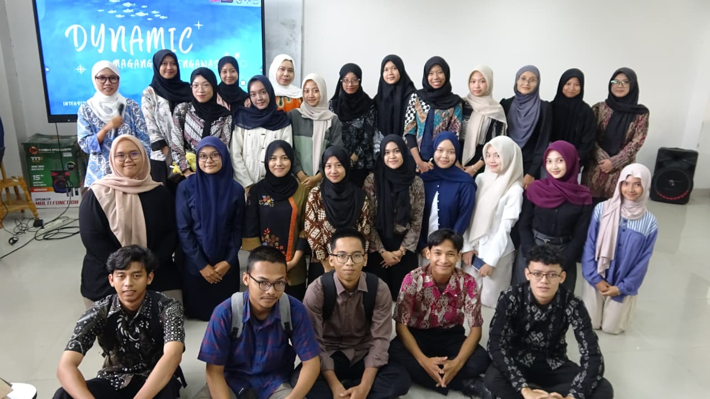
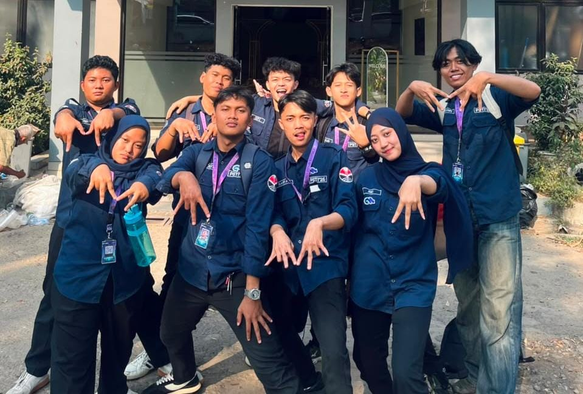
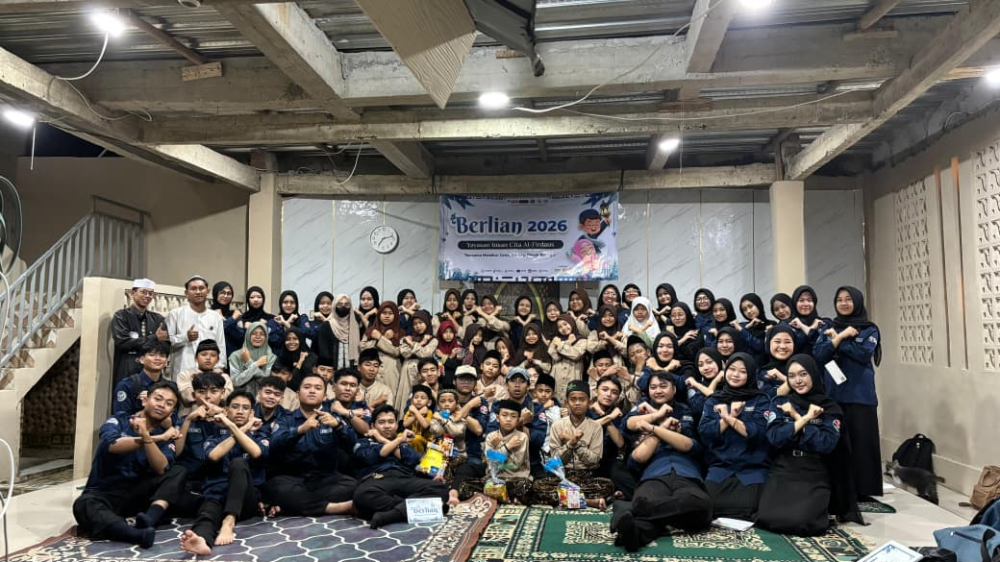
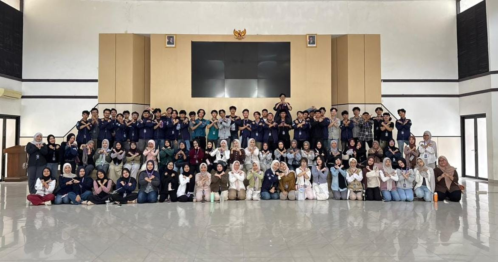
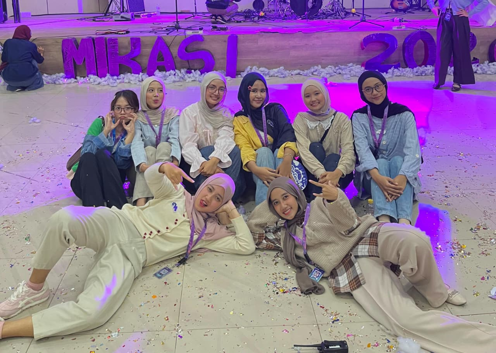
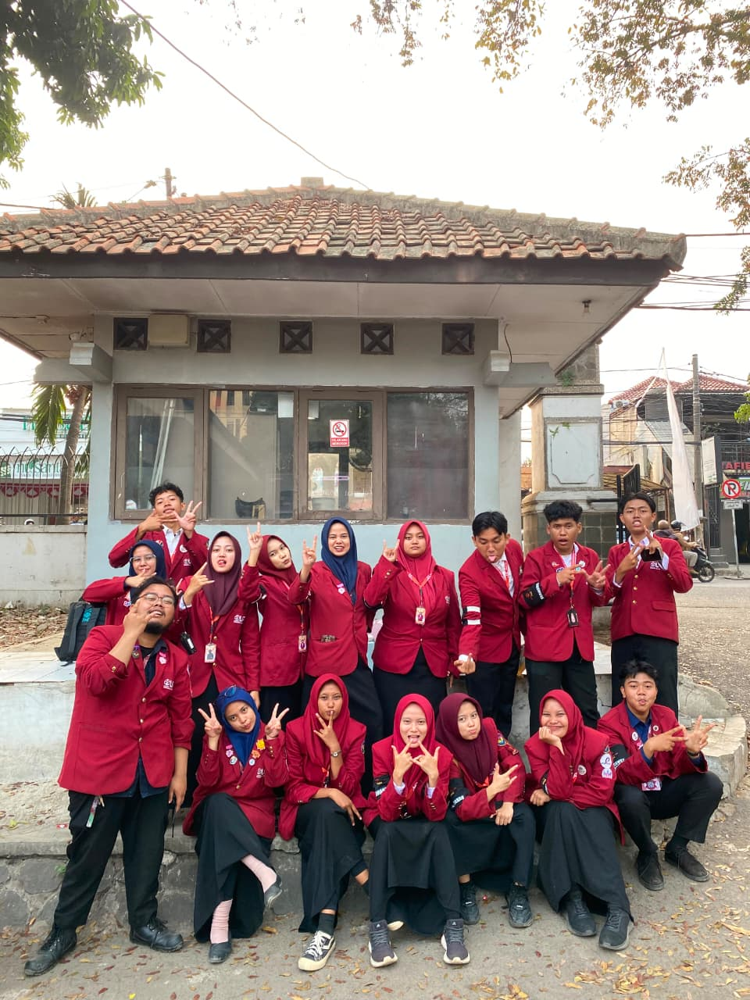
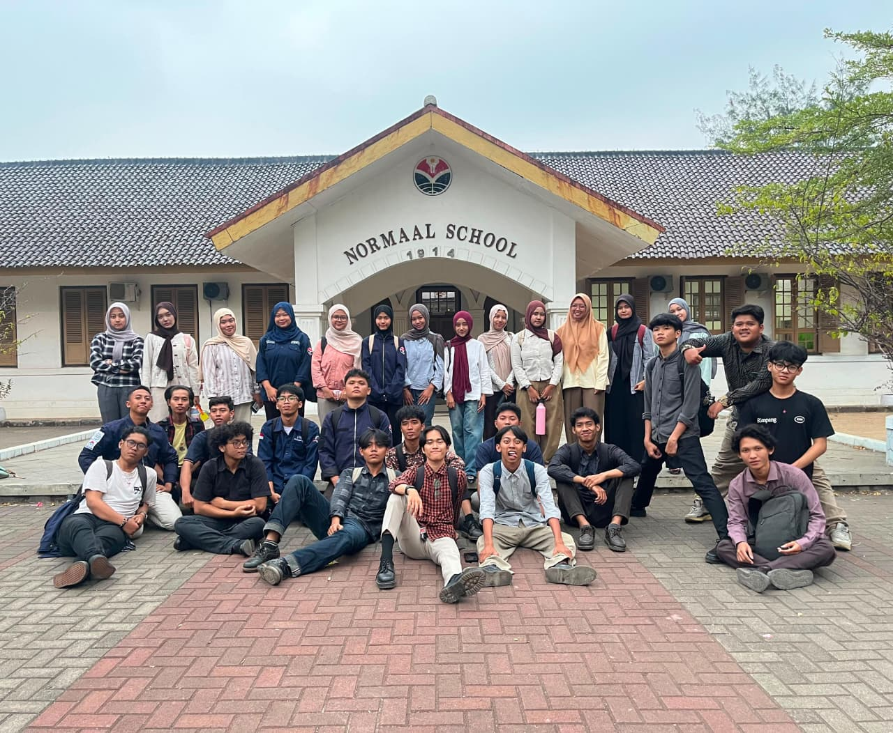
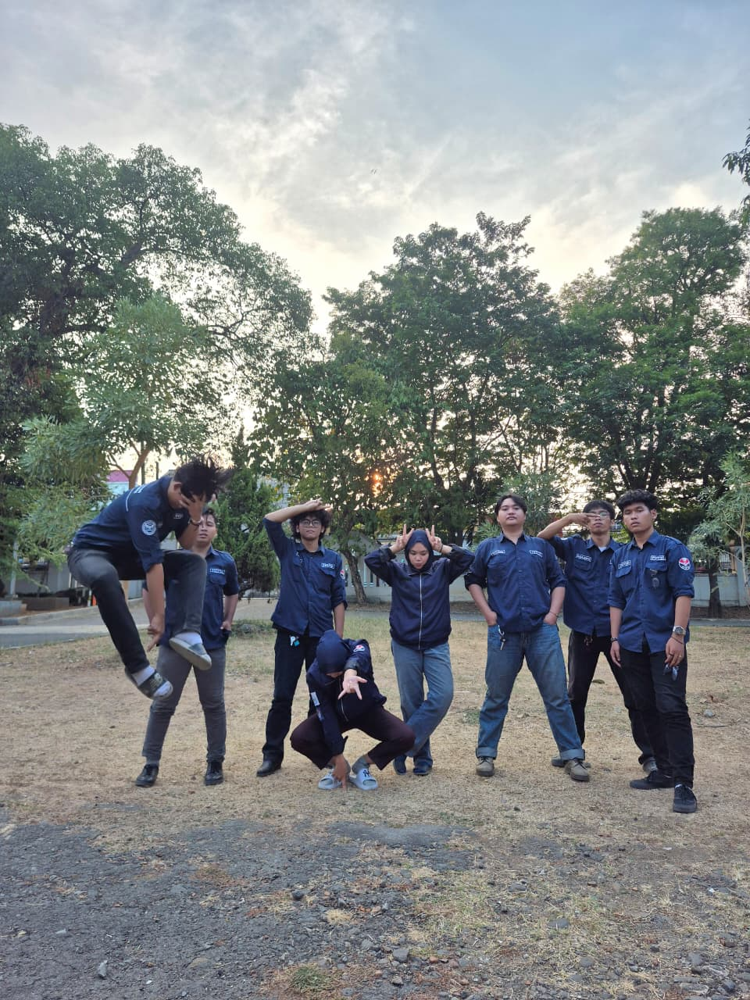
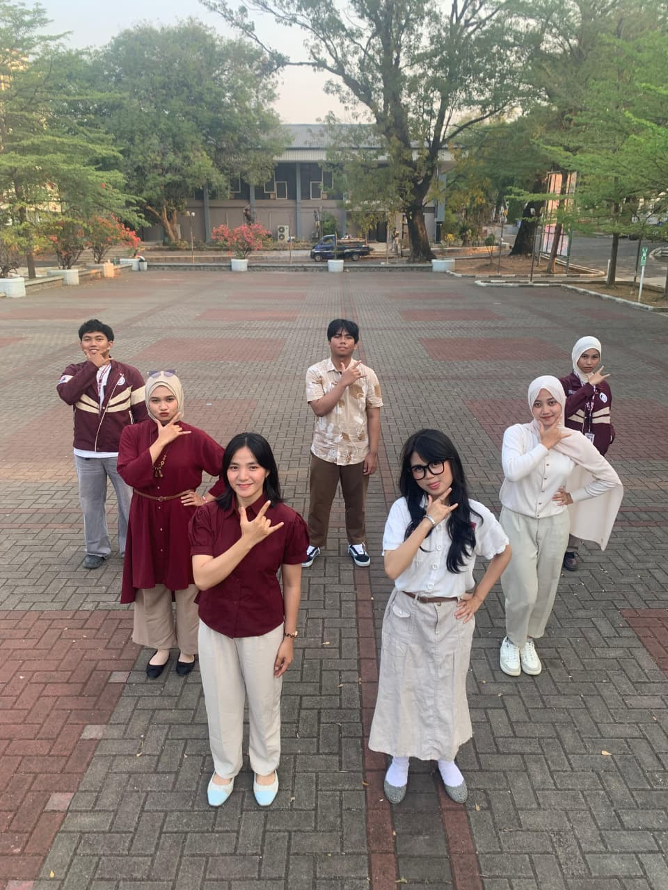

Selama kuliah, saya nggak cuma belajar dari tugas dan materi di kelas. Saya juga lumayan sering ikut berbagai kegiatan yang bikin saya ketemu banyak orang, belajar kerja bareng tim, dan ngerasain langsung gimana rasanya punya tanggung jawab dalam sebuah kegiatan. Dari situ, saya jadi belajar banyak hal yang nggak selalu bisa didapetin dari bangku kuliah.
Saya juga sempet ikut beberapa organisasi di kampus. Dari situ, saya belajar banyak tentang manajemen waktu, komunikasi, dan gimana caranya kerja bareng orang-orang yang punya latar belakang dan cara kerja yang beda-beda.
Peserta

Di DYNAMIC 2025, saya mengikuti kegiatan magang kepengawasan sebagai peserta. Dari kegiatan ini, saya mendapat pengalaman untuk mengenal bagaimana proses kepengawasan dalam sebuah kegiatan dan belajar melihat jalannya suatu kegiatan dari sisi yang berbeda.
Staff MIKAT — Minat dan Bakat

Di HIMA PSTI 2026, saya bergabung sebagai staff MIKAT atau Minat dan Bakat. Di dalam divisi ini, saya ikut terlibat dalam berbagai kegiatan dan program kerja yang berkaitan dengan minat dan bakat mahasiswa. Pengalaman ini membuat saya belajar lebih banyak tentang kerja tim dan bagaimana menjalankan tanggung jawab dalam sebuah divisi.
Staff Acara

Di BERLIAN 2025, saya bergabung sebagai staff acara dalam kegiatan kunjungan ke pesantren yang ditujukan untuk anak-anak yatim dan dhuafa. Saya ikut membantu mempersiapkan dan menjalankan kegiatan bersama tim. Dari pengalaman ini, saya belajar tentang kerja sama, tanggung jawab, dan bagaimana membuat sebuah kegiatan bisa berjalan dengan baik.
WaKoor Fiscal Vault / Bendahara


Di MIKASI ESTIFEST 2026, saya terlibat dalam program kerja MIKAT dan bertugas sebagai PJ LPJ. Saya bertanggung jawab dalam proses penyusunan dan pengelolaan LPJ kegiatan bersama tim yang terlibat. Dari sini, saya belajar untuk lebih teliti dalam mengumpulkan data, mengatur dokumen, dan memastikan laporan kegiatan dapat disusun dengan baik.
Staff Keamanan

Di MOKA-KU 2026, saya bergabung sebagai staff keamanan. Pengalaman ini menjadi kesempatan bagi saya untuk belajar mengenai tanggung jawab dan koordinasi dalam bidang keamanan sebuah kegiatan.
Staff Logistik & Dekorasi

Di E-TIME 2026, saya bergabung sebagai staff logistik dan dekorasi. Saat ini, kegiatan masih berada dalam tahap persiapan dan rapat menuju pelaksanaan.
Staff Keamanan

Di ROTASI 2026, saya bergabung sebagai staff keamanan. Saat ini, ROTASI masih dalam tahap persiapan dan rapat sebelum kegiatan dilaksanakan.
Staff Keamanan

Di POSPEK 2026, saya bergabung sebagai staff keamanan. Saat ini, POSPEK masih dalam tahap persiapan dan rapat sebelum kegiatan dilaksanakan.
© 2026 Kireina Elfaradis.